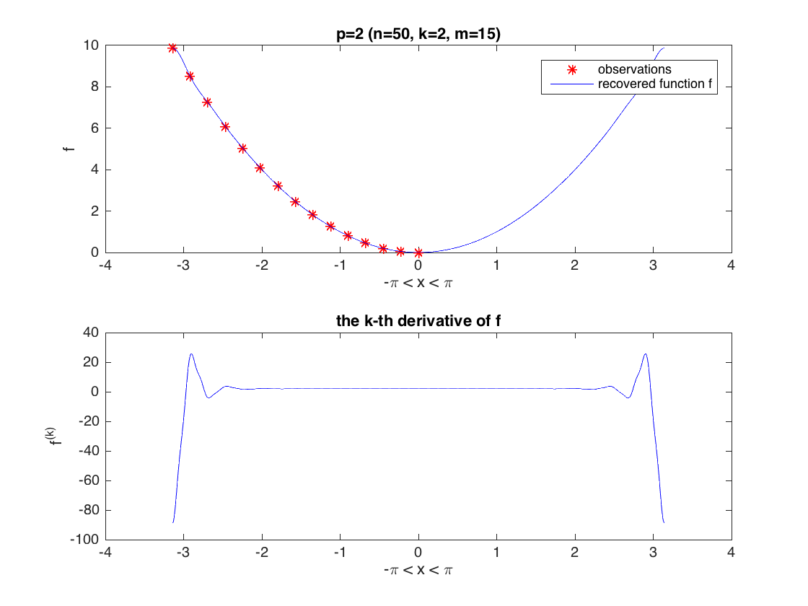
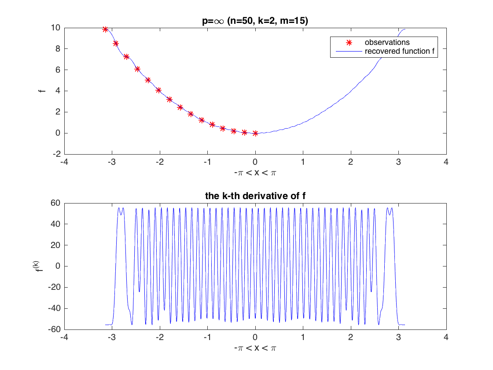
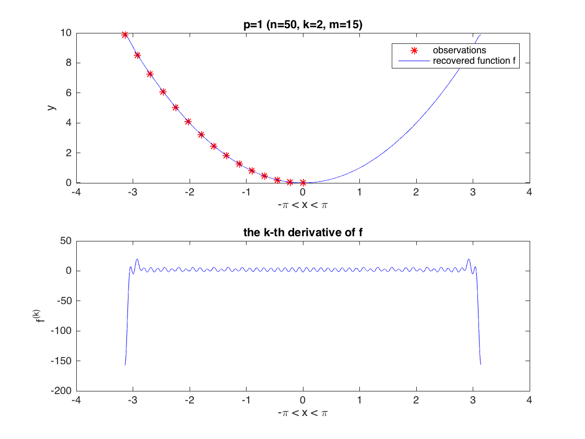

Contents
clear all; clc;
cvx_solver mosek
Warning: The following errors were issued when initializing the solvers:
Gurobi: No valid Gurobi license was found.
Please check your installation and re-run CVX_SETUP.
These solvers are unavailable for this session.
generate the data
m = 15;
x = linspace(-pi,0,m);
y = (x.^2)';
n = 50;
M = zeros(m,n+1);
for j=0:n
M(:,j+1) = cos(j*x);
end
grid_size = 1000;
grid = linspace(-pi,pi,grid_size)';
The "spline algorithm" with p=2
k = 2;
D = sqrt(pi)*diag((0:n).^k);
cvx_begin quiet
variable a_2(n+1)
variable c
minimize c
subject to
M*a_2 == y;
[c*eye(n+1), D*a_2; (D*a_2)', c] == semidefinite(n+2)
cvx_end
recovered_2 = zeros(grid_size,1);
recovered_2k = zeros(grid_size,1);
for j=0:n
recovered_2 = recovered_2 + a_2(j+1)*cos(j*grid);
recovered_2k = recovered_2k - a_2(j+1)*j^k*cos(j*grid);
end
figure(1)
subplot(2,1,1);
plot(x,y,'r*',grid,recovered_2,'b-')
legend('observations','recovered function f')
title(strcat('p=2 (n=',num2str(n),', k=',num2str(k),', m=',num2str(m),')'))
xlabel('-\pi < x < \pi')
ylabel('f')
subplot(2,1,2);
plot(grid,recovered_2k,'b-')
title('the k-th derivative of f')
xlabel('-\pi < x < \pi')
ylabel('f^{(k)}')

an aside: verification of the closed-form formula
Delta = diag((1:n).^k);
A = M(:,2:end)/Delta;
B = inv(A*A');
a_sharp_0 = sum(y'.*sum(B))/sum(sum(B));
a_sharp = [a_sharp_0; Delta\( A'*B*(y-a_sharp_0) )];
norm(a_2-a_sharp)
ans =
2.4600e-09
The "spline algorithm" with p=inf
cvx_begin quiet
variable a_inf(n+1)
variable c
variable Qp(n+1,n+1) semidefinite
variable Qm(n+1,n+1) semidefinite
expression up(n)
expression um(n)
expression rhs(n)
for j=1:n
up(j) = sum(diag(Qp,-j));
um(j) = sum(diag(Qm,-j));
rhs(j) = a_inf(j+1)*j^k/2;
end
minimize c
subject to
M*a_inf == y;
trace(Qp) == c
trace(Qm) == c
up == +rhs
um == -rhs
cvx_end
recovered_inf = zeros(grid_size,1);
recovered_infk = zeros(grid_size,1);
for j=0:n
recovered_inf = recovered_inf + a_inf(j+1)*cos(j*grid);
recovered_infk = recovered_infk - a_inf(j+1)*j^k*cos(j*grid);
end
figure(2)
subplot(2,1,1);
plot(x,y,'r*',grid,recovered_inf,'b-')
legend('observations','recovered function f')
title(strcat('p=\infty (n=',num2str(n),', k=',num2str(k),', m=',num2str(m),')'))
xlabel('-\pi < x < \pi')
ylabel('f')
subplot(2,1,2);
plot(grid,recovered_infk,'b-')
title('the k-th derivative of f')
xlabel('-\pi < x < \pi')
ylabel('f^{(k)}')

The "spline algorithm" with p=1
N = 100;
cvx_begin quiet
variable a_1(n+1)
variable up(N+1)
variable um(N+1)
expression rhs(N+1)
for j=1:n+1
rhs(j) = a_1(j)*(j-1)^k;
end
minimize up(1)+um(1)
subject to
M*a_1 == y;
toeplitz(up) == semidefinite(N+1)
toeplitz(um) == semidefinite(N+1)
up - um == pi*rhs
cvx_end
recovered_1 = zeros(grid_size,1);
recovered_1k = zeros(grid_size,1);
for j=0:n
recovered_1 = recovered_1 + a_1(j+1)*cos(j*grid);
recovered_1k = recovered_1k - a_1(j+1)*j^k*cos(j*grid);
end
figure(3)
subplot(2,1,1);
plot(x,y,'r*',grid,recovered_1,'b-')
legend('observations','recovered function f')
title(strcat('p=1 (n=',num2str(n),', k=',num2str(k),', m=',num2str(m),')'))
xlabel('-\pi < x < \pi')
ylabel('y')
subplot(2,1,2);
plot(grid,recovered_1k,'b-')
title('the k-th derivative of f')
xlabel('-\pi < x < \pi')
ylabel('f^{(k)}')
